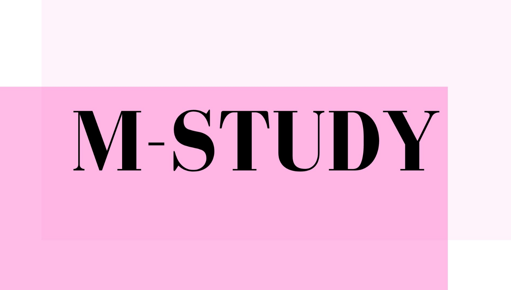
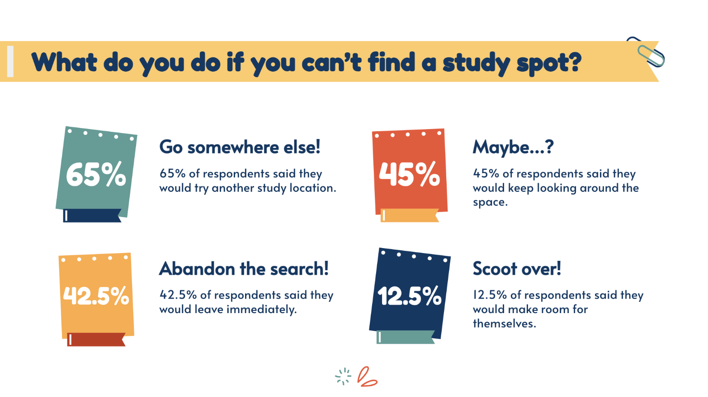
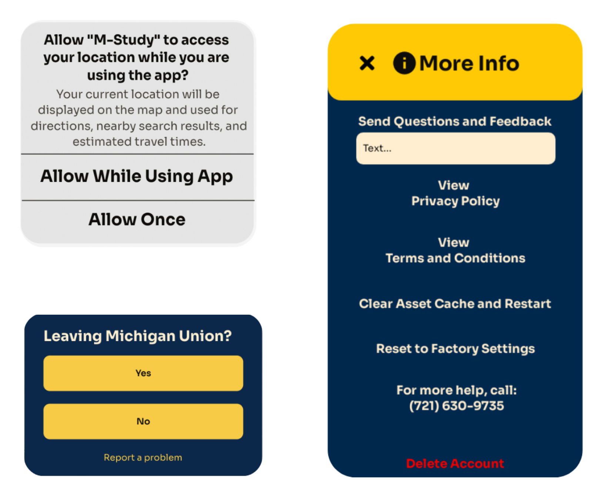

୨୧ · · ♡ · · ୨୧
M-STUDY

In collaboration with Lynn Sabieddine, Chloe Powell, Meghan Levitt, Haoran Li
The Problem
୨୧ · · ♡ · · ୨୧
- Students have specific preferences for their study spaces
- Study spaces tend to be very full with no way to know availability before arriving
- Valuable study time is wasted looking for a spot to work

Our Solution
୨୧ · · ♡ · · ୨୧
- An app that allows UM students to find Study Spots without wasting time
- Shows availability and hours
- Finds the closest Study Spot available
- Rate the Study Spot/leave reviews for other users
- Users can “heart” their favorite Study Spots
- Users can report whether Study Spots are open or not
- Reserve all Private Spots in Campus on one app
- Door sensors to track arrivals and exits
- Updates the availability in the app
Data Collection and Analysis
୨୧ · · ♡ · · ୨୧
- Pilot data was collected through Google Forms
- Location data is collected only while using app (or manually allowed prior to each use)
- User’s ‘favorites’ and ‘preferences’ for Spots are saved
- Door sensors will be installed to aid basic traffic analysis
- This, along with check-in data, will inform user of availability of open Spots relative to their location
- User’s location is compared to the nearest MStudy Spots
- User ratings move ranking of Study Spot
- Users are prompted to rate and note of the conditions of the Spot (for noise level, seat availability, etc.)
- Details of Spots for other users
- Saved preferences will suggest ideal Study Spots for the user

Interface Design (Accessibility)
୨୧ · · ♡ · · ୨୧
- Compatible with assistive technology
- High color contrast of at least 4.5:1 for color blind individuals (1)
- Auditory options for the visually impaired
- Active voice option auto-enabled
- Alt text available on images (9)
- Easy-to-read text for the hearing and visually impaired
- UM colors, compatible with Web Accessibility Guidelines
- Larger text for easier navigation
- Minimalist design
- Different languages